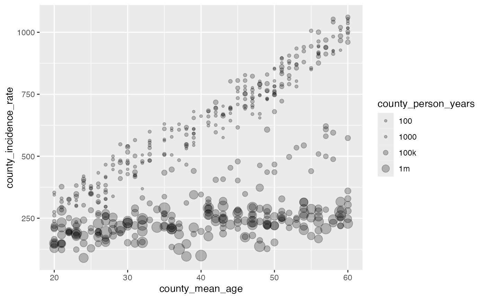
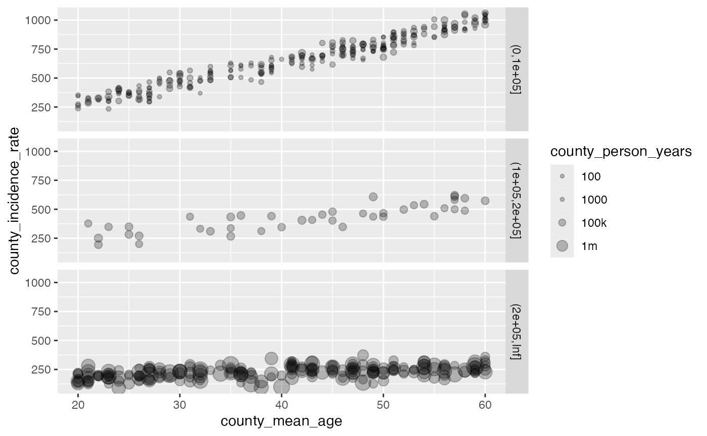
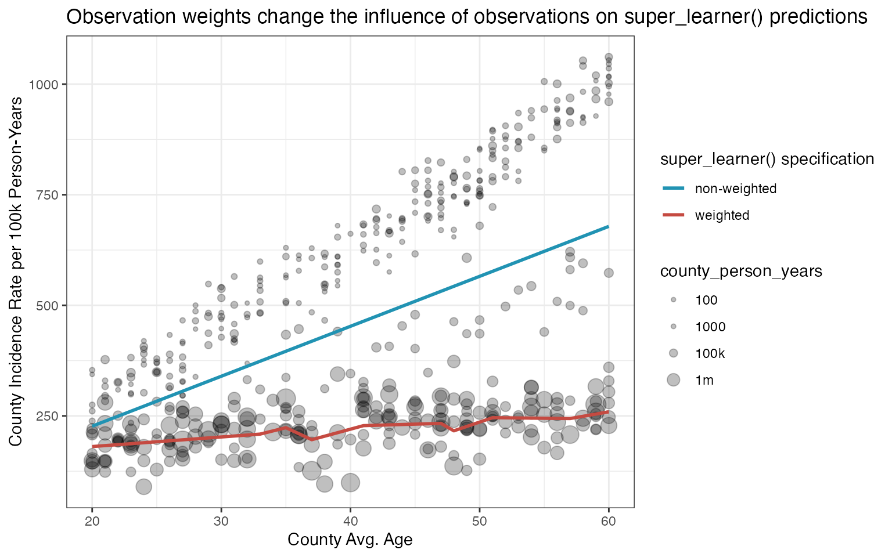

There may be non-trivial reasons to weight the observations passed
into nadir::super_learner(). One such example might be when
the outcome is a population prevalence or incidence rate and the
observations should be weighted to reflect the fact that the
outcomes may represent varying amounts of underlying exposure-time (or
person-time frequently in epidemiology).
We demonstrate here how to use weighted observations in
super_learner() and check that the loss in a weighted
super_learner() is favorably reduced on higher weight
observations compared to in an unweighted
super_learner().
library(nadir)
set.seed(1234)
# generate synthetic data
n_counties <- 500
df <- tibble::tibble(
county_id = 1:n_counties,
county_person_years = round(rlnorm(n = n_counties, meanlog = log(1e5), sd = 3)) + 10,
# if it's a particularly rural county, we assume the average age is slightly higher
county_mean_age = sample(x = 20:60, n_counties, replace = TRUE),
county_avg_sbp = sample(90:150, n_counties, replace = TRUE) + 2*(county_mean_age - mean(county_mean_age))/sd(county_mean_age),
# counties have between hundreds to hundreds of thousands of people;
# we assume we have observed 1 year of time for all people in the county
county_incidence_rate =
dplyr::case_when(
county_person_years >= 1e5 & county_person_years < 2e5 ~
50 + 1.5 * county_mean_age + 1.3 * county_mean_age^{4/3} +
sqrt(county_avg_sbp) + rnorm(n = n_counties, mean = 0, sd = 10),
county_person_years < 1e5 ~
25 + 1.9 * county_mean_age + 1.6 * county_mean_age^{3/2} +
1.5 * sqrt(county_avg_sbp),
county_person_years >= 2e5 ~
35 + 1.7 * county_mean_age + 1.6 * county_mean_age^{1/2} +
1.4 * sqrt(county_avg_sbp),
) + rnorm(n = n_counties, mean = 100, sd = 50)
)
head(df)
#> # A tibble: 6 × 5
#> county_id county_person_years county_mean_age county_avg_sbp
#> <int> <dbl> <int> <dbl>
#> 1 1 2685 30 88.2
#> 2 2 229867 41 100.
#> 3 3 2587630 21 122.
#> 4 4 98 50 150.
#> 5 5 362336 53 100.
#> 6 6 456396 43 105.
#> # ℹ 1 more variable: county_incidence_rate <dbl>Let’s take a look at what the simulated data look like. You can see that depending on whether we focus on the large population counties or smaller population counties, we should pick up on different trends.
library(ggplot2)
ggplot(df, aes(x = county_mean_age, y = county_incidence_rate, size = county_person_years)) +
geom_point(alpha = 0.25) +
scale_size_continuous(
transform = scales::pseudo_log_trans(sigma = 1e5),
breaks = c(100, 1000, 1e5, 1e6),
labels = c('100', '1000', '100k', '1m')
)
ggplot(df, aes(x = county_mean_age, y = county_incidence_rate, size = county_person_years)) +
geom_point(alpha = 0.25) +
facet_grid(cut(county_person_years, c(0, 1e5, 2e5, Inf))~ .) +
scale_size_continuous(transform = scales::pseudo_log_trans(sigma = 1e5),
breaks = c(100, 1000, 1e5, 1e6),
labels = c('100', '1000', '100k', '1m'))
Now let’s fit two super learners, one of which has its
weights set so that each observation is person-time
weighted.
# non-weighted super_learner
sl_model_no_weights <- super_learner(
data = df,
formula = county_incidence_rate ~ county_mean_age + county_avg_sbp,
learners = list(lnr_lm, lnr_earth, lnr_rf, lnr_xgboost, lnr_glmnet),
verbose = TRUE
)
sl_model_with_weights <- super_learner(
data = df,
formula = county_incidence_rate ~ county_mean_age + county_avg_sbp,
learners = list(lnr_lm, lnr_earth, lnr_rf, lnr_xgboost, lnr_glmnet),
weights = df$county_person_years, # ifelse(df$county_person_years > 2e5, 1, 0),
verbose = TRUE
)
squared_errors_with_no_weights <- (sl_model_no_weights$sl_predictor(df) - df$county_incidence_rate)^2
squared_errors_with_weights <- (sl_model_with_weights$sl_predictor(df) - df$county_incidence_rate)^2
# let's look at the larger counties
high_weight_observations <- which(df$county_person_years > 2e5)
length(high_weight_observations) #
#> [1] 205
mean(squared_errors_with_no_weights[high_weight_observations])
#> [1] 63721.07
mean(squared_errors_with_weights[high_weight_observations])
#> [1] 2408.222
# we'll generate some newdata to predict on; just at the mean sbp and
# across the observed range of data.
newdata <- df[1,]
newdata$county_avg_sbp <- mean(df$county_avg_sbp)
no_weights_predictions <- sapply(20:60, function(x) {
newdata$county_mean_age <- x
sl_model_no_weights$sl_predictor(newdata)
})
with_weights_predictions <- sapply(20:60, function(x) {
newdata$county_mean_age <- x
sl_model_with_weights$sl_predictor(newdata)
})
ggplot(df, aes(x = county_mean_age, y = county_incidence_rate, size = county_person_years)) +
geom_point(alpha = 0.25) +
scale_size_continuous(
transform = scales::pseudo_log_trans(sigma = 1e5),
breaks = c(100, 1000, 1e5, 1e6),
labels = c('100', '1000', '100k', '1m')
) +
geom_line(
data = data.frame(
county_mean_age = 20:60,
prediction = no_weights_predictions),
mapping = aes(y = prediction, color = 'non-weighted'),
size = NULL, linewidth = 1) +
geom_line(
data = data.frame(
county_mean_age = 20:60,
prediction = with_weights_predictions),
mapping = aes(y = prediction, color = 'weighted'),
size = NULL, linewidth = 1) +
scale_color_manual(values = c('weighted' = '#c54a41', 'non-weighted' = '#2193b3')) +
theme_bw() +
labs(color = 'super_learner() specification',
x = 'County Avg. Age',
y = 'County Incidence Rate per 100k Person-Years') +
ggtitle("Observation weights change the influence of observations on super_learner() predictions")
#> Warning: Using `size` aesthetic for lines was deprecated in ggplot2 3.4.0.
#> ℹ Please use `linewidth` instead.
#> This warning is displayed once every 8 hours.
#> Call `lifecycle::last_lifecycle_warnings()` to see where this warning was
#> generated.